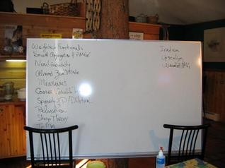
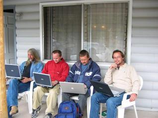
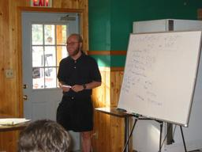

In 1997, a casual research meeting between researchers at the University of Colorado's Applied Math Department
and Lawrence Livermore National Lab's CASC Division met in Frisco, Colorado, to collaborate on AMG and related issues. They met again in Boulder in 1998. In 2000, the meetings became annual. The Summits from 2000 to 2009 were held in Lake City, Colorado. From 2002 until 2006, they expanded to include an Applied Math research retreat, primarily focused on the FOSLS methodology. Between 2010 and 2015, the Summits alternated between Boulder in even years and Lake City in odd years. In 2016, the Summits began alternating between Los Osos, on California's central coast, in even years and Lake City, in southwestern Colorado's high country, in odd years.
The structure is like that of the
Copper Mountain meetings in the sense of morning and
evening sessions, with afternoons free to recover from the intensity of the discussions. But the 'sessions' are much different. We strongly
discourage formal talks about what is known in favor of exposing troubles and open issues. The knowledge content is primarily for setting the scene
for the attendees to try to work on troubles and questions, and help suggest some avenues of further research.
  
The following lists represent the main topics of discussion at the recent Summits.
Topics for the 2018 meeting
Solvers for matrix-free systems
AMG for Hessians in PDE-constrained optimization
MG coarse-graining of dynamical systems (power grids)
MG for systems of BVPs & PDEs
Virtual elements for networks
Automatic smoothers for AMG (with complementary interpolation, maybe)
Parallel time integration for hyperbolic problems
AMR for FOSLS
Ill-conditioning effects on MG & AMG
AMG for boundary conditions treated by Nitsche's method
AMG for FOSLS applied to hyperbolic equations
Necessary and sufficient conditions for two-level convergence of MGRiT
Optimal coarse-grid solvers for MGRiT
Space-time for hyperbolic PDEs
Unassembled AIR for advection
Coarsening for pAIR
MG for uncertainty quantification, particularly for Bayesian inference
MG reduction for reservoir modeling
Nonlinear MG
Coarse-grid stability and convergence for hypersonic flow
AMGe
MG for fractional Laplacians
Implementation for elasticity
Stopping criteria for iterative solvers
MG for structured/unstructured matrices
The 2017 meeting
With half precision (16 bit!) hardware coming out, can we use this with multigrid, e.g. when representing the values in a hierarchical way?
The best published algorithm for 2D multigrid is Stüben's 1982 version using 30 Flops per unknown. Can one do better? What are the optimal algorithms for 3D? What for other problems? Higher order? Stokes?
When data transport is the dominating cost factor, can we prove lower bounds for MG? How would we quantify data transport in MG anyway?
Will we ever be able to state beforehand what the total cost
will be to solve any particular but practical class of nxn matrix equations by AMG?
Adaptive and bootstrap AMG and SA attempt to determine local representations for the near-kernel components of relaxation automatically by solving Ax=0. But how can we determine the minimal number of local vectors we need to do this (i. e., a local 'basis')? Classical adaptive SA readily determines when we don't have enough (i. e., when the vectors don't 'span' the near kernel), but how do we best handle redundancy (i. e., 'linear dependence')?
What is the status of AMG for Helmholtz, systems, and nonsymmetric problems?
Can MGRIT be used for neural networks?
We generally expect PDE solutions to be smooth in the limit of refinement so that at two sufficiently close points the solution will be almost identical. Given that one will only differ from the other by a few bits, can we do something smarter than storing both numbers in full precision? Can we operate directly on some kind of compressed representation, or just on the differences?
What's the status of wavelet multigrid research?
What's the status of multigrid methods for training algorithms of deep neural networks?
What is the correct balance between restriction and interpolation for non-symmetric problems?
Symmetric theory says interpolation must approximate low modes accurately. For non-symmetric
systems, if we use ideal interpolation, restriction is not too important. Conversely, if we use ideal
restriction, interpolation is not very important.
Multigrid based on approximate ideal reduction has been developed and works well on
logically lower triangular systems. Can multigrid beat a backsolve for lower triangular systems
on a parallel machine?
Two-grid and V-cycle theory is well developed for SPD systems, especially M-matrices.
What is the best way to generalize this to non symmetric systems?
Parallel in time (PiT) algorithms have been developed and shown to be more effective than
sequential time stepping on massively parallel machines. Recently, PiT algorithms were modified
to include Richardson extrapolation and adaptive time stepping. Can they be modified to
give both spatial and temporal local adaptive refinement?
How do we precondition block-structured matrices, especially those from discretized first-order systems and, in particular, by way of a Schur complement?
The 2016 Meeting
Nonsymmetric AMG, Ideal Restriction, & Nonsymmetric Energy-Min
Indefinite AMG
Interior Point Methods
AMG with Multiple Coarse Grids
AMG for Kronecker Products & Sums
Adaptivity & Energy-Min for Systems
PyAMG
Combining AMG & Direct Methods
AMG for PDE-Constrained Optimization
Multigrid-in-Time for Hyperbolic & Other Problems
Trace- & Energy-Min AMG Interpolation Construction
AMG for Systems
Adaptive AMG
Physics-Based AMG
Combining Algebraic Preconditioners & Physics-Based MG
Non-Quadratic Optimization, e. g., for Hyperelastic Materials
Solvers for High-Order Discretizations
Solvers for Nearly Incompressible Elasticity
AMG on Next-Gen Architectures (e.g., CPU+GPU Nodes)
Multigrid for Model Reduction of Dynamical Systems
The Role of PDE Theory in MG for PDE Systems
FAMG
AMG-DD Theory
Signed-Undirected & Unsigned-Directed Graph Applications
New Directed Graph Coarsening Schemes
Multiplicative-Update Multigrid for Nonlinear Power Flow Equations
A Zoo of Geometric AMGe Solvers
Application to MLMC (Multilevel Monte Carlo)
Update on Hybridization H(div) Solvers
Update on AMG for Powerflow Problems (with Multiplicative Correction)
Smoothing Property & Smoothed Interpolant Imply TG Convergence
Spectral Coarsening for Graph Laplacian/Finite Volume
Artificial Intelligence
The 2015 Meeting
Full or Nested Iteration AMG (FAMG)
AMG & Domain/Range Decomposition (AMG-DD/RD)
AMG for H(div) Systems
AMG for FOSLS Systems
Parallel in Time
Anisotropic Diffusion & FOSLS for Hyperbolic Conservation Laws
AMG/SA for Nonsymmetric Systems (Directed Graphs)
Root Node & New Ideal Interpolation
αSA
αAMG for Systems
"Ideal" Interpolation & Restrictions Revisited
Constrained and Unconstrained Optimization
A Multigrid Eigensolver for Laplace-Beltrami on Surfaces
A Finite Element Method for the Wilson-Dirac System
Estimating the Error Between the True Solution and an Iterate
The 2014 Meeting
Root Node or Not Root Node in AMG
Predicting AMG Hierarchies
Strength of Connection
Selecting Aggregates
Right-Hand Side Aggregation
High-Order Discretization
Cheap FOSLS Adaptivity
Restriction Operators
Power Grid
Parallel Performance Models
Spectral AMG for Saddle Point Problems
FOSLS-RD
Parallel in Time
AMG Theoretical Aspects
Parallel AMG
Nédélec Interpolation
Delta Relaxation
AMG for Systems
Graph Trees
Glacier Models
FOSLL*
A Posteriori Error Estimates
Are We Done Yet (with Adaptive AMG)?
The 2013 Meeting
Multigrid for Stokes with Jump-Discontinuous Viscosity
Randomized Multigrid and Fault Tolerance
Multilevel Range/Domain Decomposition
Coarsening de Rham Sequences
Smoothed Aggregation Coarsening
Adaptive Smoothed Aggregation
Matrices with (Strong) Local Disturbances
Non-Galerkin Coarse Grids
Adaptive Mesh Refinement Range Decomposition
Multilevel Minimization with Sparsity Constraints
Scale-Free Graph Coarsening
Anisotropic Diffusion
Parallel in Time
Helmholtz Equations
AMG for Systems
Model Order Reduction
Uncertain Diffusion
Cloth
FOSLS/FOSLL*/Hybrid
Liquid Crystals
Reusing Preconditioiners
The 2012 Meeting
Adaptive AMG for Coupled Systems
Anisotropic Diffusion
Fault Resilience
Multilevel Decomposition
Parallel AMR
Time-Space MG/Parareal
Uncertainty Quantification
Non-Galerkin Coarse Grids
Predicting AMG Hierarchies
Graph Matrix Problems
AMG for Low-Rank Perturbations
AMG for Power Grid Applications
Exascale AMG
Many Core Solvers
Performance Models
The 2011 Meeting
Image Segmentation
AMG/SA for Anisotropic Diffusion
AMG/SA for Stokes in a Long Tube
AMG/SA for Stochastic PDEs/Glaciers
Multilevel Domain Decomposition
Additive MG
Parallel MG
AMG/SA for Weigheted-Norm FOSLS
MG for Spectro-Polarmetric Signal Fitting
Compatible Relaxation
Time-Space MG/Parareal
Uncertainty Quantification
Exascale Computing
Local-Schur Non-Galerkin MG
Parallel AMR
The 2010 Meeting
Extendability of AMG:
- Elliptic/Nonelliptic
- Definite/Indefinite
- Grids/Graphs/Networks
- Local/Nonlocal
- Sparse/Dense
- Distributive/Parallel/Sequential
- Linear/Nonlinear
- Coarsening Full Equations/Approximation of Errors
- Equations, Statistics, Clustering
- Time Dependent/Steady State
AMG for Elasticity
AMG for Multicore Computers
QCD
BAMG/aAMG/aSA
Compatible Relaxation
Magnetohydrodynamics
Neutron Transport
The 2009 Meeting
Image Segmentation
Parallel Compatible Relaxation
Compatible Relaxation Candidate Sets
Eigenproblems
Quantum Mechanics
Lattice Spin Systems
Markov Processes
Spin Systems
Secular Equations
Nonsymmetric Matrices
K-Cycles
AMG Interpolation for Elasticity
Bootstrap/Adaptive AMG for Systems
Parallel Smoothers
The 2008 Meeting
Relaxation
Coarse Level
Interpolation
Markov Chains
Image Processing
Theory
Systems
QCD Physics
Improved aSA Coarsening
Number of aSA Bad Guys
Multiple aAMG Bad Guys
Bridging Scales
Group AMG
The 2007 Meeting
QCD
Markov chains
Parallel AMG
Eigensolvers
MHD/Maxwell
The 2006 Meeting
Parallel AMG
AMG Complexity
Coarsening Measures
caAMG Theory and Practice
High-Order AMG
Nonsymmetric AMG/SA
Smoothed Aggregation Eigensolver
QCD
Maxwell
Geometric vs. Algebraic MG
Additive vs. Multiplicative
Nonlinear Approximation (A)MG
MG for Transport
AMG Theory
AMG for Systems
Interpolation
Aggregation
The 2005 Meeting
aSA for Weighted Functionals
SA & aSA for Systems
General Strength Measures
AMG & Adaptive Refinement
AMG Starting Guesses
Minimizing ||PR||_A
Trace Minimization
Nonsymmetry
Viscoelasticity
Nested Iteration
Multigrid for Transport
Spectral-Element Multigrid
FOSLS Vorticity Form
Parallel FOSPACK
Coarse Variable Type
The 2004 Meeting
Weighted Functionals
Smooth Aggregation & e-Free AMGe
Nonlinearity
Almost Zero Modes
Measures
Coarse Variable Types
Sparsity of P / Dilution
Relaxation
Sharp Theory
Trace Minimization
Iradism
Upscaling
Wavelet AMG
The 2003 Meeting
aAMG
CR:
| | max |e|? |
| AMG vs SA P? |
| systems, de-coarsening |
QCD
Aggregation
Nonsymmetric
NonPDEs
Fos-hyp-mg
Nonlinear mg
Hypre-amg
Singularities-h/p
h/p methods
Transport-conservation
L^1 minimization
Singularities
3D FOSLL*
Jaws
|